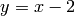

Navigation
- index
- next |
- previous |
- Sage Tutorial v4.3 »
- 导览 »

自定义函数的某些问题可能令人迷惑（如微分或绘图）。 这一节我们讨论一下相关的话题。
有多种方法定义可以被称为“函数”的东西：
1. 定义Python函数，正如 函数，缩进和计数 中所提到的那样。 这些函数可用于绘图，但是不能用于微分和积分。
sage: def f(z): return z^2
sage: type(f)
<type 'function'>
sage: f(3)
9
sage: plot(f, 0, 2)
注意最后一行的语法。如果使用 plot(f(z),0,2) 的话，会报错。 因为在 f 的定义中 z 是一个形式变量，在 f 之外， z 没有定义。实际上只是 f(z) 有问题。下面的代码就可以正确工作， 但是一般来说这也是有问题的，要尽量避免（参见下面第4条）。
sage: var('z') # 定义z为一个变量
z
sage: f(z)
z^2
sage: plot(f(z), 0, 2)
这里, f(x) 是一个符号表达式，这是我们下一条要讨论的。
sage: g(x) = x^2
sage: g # g sends x to x^2
x |--> x^2
sage: g(3)
9
sage: Dg = g.derivative(); Dg
x |--> 2*x
sage: Dg(3)
6
sage: type(g)
<type 'sage.symbolic.expression.Expression'>
sage: plot(g, 0, 2)
注意 g 是可调用的符号表达式, g(x) 是一个与之相关， 但是不同类型的对象，虽然 g(x) 也可用于绘图、微分等。 参见下面第5条的展示。
sage: g(x)
x^2
sage: type(g(x))
<type 'sage.symbolic.expression.Expression'>
sage: g(x).derivative()
2*x
sage: plot(g(x), 0, 2)
sage: type(sin)
<class 'sage.functions.trig.Function_sin'>
sage: plot(sin, 0, 2)
sage: type(sin(x))
<type 'sage.symbolic.expression.Expression'>
sage: plot(sin(x), 0, 2)
sin 本身不能进行微分，至少不会得到 cos.
sage: f = sin
sage: f.derivative()
...
AttributeError: ...
使用 f = sin(x) 而不是 sin, 就可以进行微分了， 而且比用 f(x) = sin(x) 建立一个可调用的符号表达式要好。
sage: S(x) = sin(x)
sage: S.derivative()
x |--> cos(x)
下面解释一些常见的问题：
4. 意外的运算结果（Accidental evaluation）
sage: def h(x):
... if x<2:
... return 0
... else:
... return x-2
问题: plot(h(x), 0, 4) 画出来的是直线 , 而不是 h 定义的折线。为什么？在命令 plot(h(x), 0, 4) 中， h(x) 首先被计算，也就是将 x 代入 h, 从而 x<2 被计算。
sage: type(x<2)
<type 'sage.symbolic.expression.Expression'>
当一个符号表达式被计算时，象在 h 的定义中的那样， 如果不是明确的真，就会返回假。于是 h(x) 计算的结果是 x-2, 这也是刚才所绘制的函数。
解决方案：不要用 plot(h(x), 0, 4), 而是用
sage: plot(h, 0, 4)
5. 意外得到一个常数而不是一个函数
sage: f = x
sage: g = f.derivative()
sage: g
1
问题: g(3) 返回错误： “ValueError: the number of arguments must be less than or equal to 0.”
sage: type(f)
<type 'sage.symbolic.expression.Expression'>
sage: type(g)
<type 'sage.symbolic.expression.Expression'>
g 不是一个函数，而是一个常量，所以它没有相关的自变量， 你也就不能再做其他运算。
解决方案：有好几种选择。
sage: f(x) = x # 而不是 'f = x'
sage: g = f.derivative()
sage: g
x |--> 1
sage: g(3)
1
sage: type(g)
<type 'sage.symbolic.expression.Expression'>
sage: f = x
sage: g(x) = f.derivative() # 而不是 'g = f.derivative()'
sage: g
x |--> 1
sage: g(3)
1
sage: type(g)
<type 'sage.symbolic.expression.Expression'>
sage: f = x
sage: g = f.derivative()
sage: g
1
sage: g(x=3) # 而不是 'g(3)'
1
最后，还有一种方法来说明 f = x 与 f(x) = x 导数间的区别：
sage: f(x) = x
sage: g = f.derivative()
sage: g.variables() # g 的变量
()
sage: g.arguments() # g 的参数
(x,)
sage: f = x
sage: h = f.derivative()
sage: h.variables()
()
sage: h.arguments()
()
正象这个例子所展示的那样, h 不接受任何参数，这正是 h(3) 报错的原因。